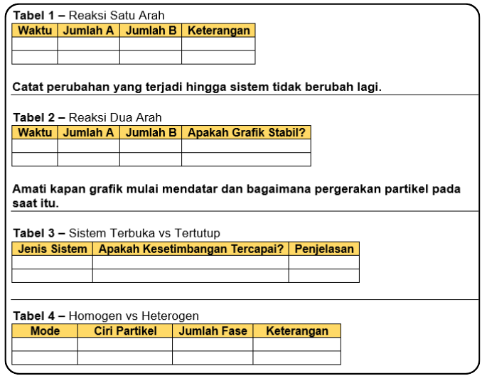

MENCOBA
Pada tahap ini, anda akan menggunakan virtual lab “Simulasi Reaksi Reversible dalam Sistem Tertutup” untuk membuktikan secara langsung konsep yang telah dipelajari.
Berbeda dengan tahap sebelumnya yang bersifat pengamatan dan penalaran, pada tahap ini anda akan melakukan eksplorasi aktif, mencatat hasil, dan menganalisis perubahan yang terjadi pada sistem.
Sebelum memulai, perhatikan kembali bagian-bagian utama pada virtual lab:
- Panel Ruang Reaksi menampilkan partikel A (biru) dan B (merah).
- Panel Grafik menunjukkan perubahan jumlah partikel terhadap waktu.
- Panel Kontrol digunakan untuk memilih jenis reaksi, sistem terbuka/tertutup, mode homogen/heterogen, serta mengatur laju reaksi.
Pastikan anda memahami fungsi setiap tombol sebelum memulai simulasi.
1️⃣ Reaksi Satu Arah (Irreversible) dan Dua Arah (Reversible)
- Aktifkan Reaksi Satu Arah (Irreversible) dalam sistem tertutup.
- Jalankan simulasi dan amati perubahan partikel serta grafik konsentrasi terhadap waktu.
- Apakah partikel A masih tersisa setelah beberapa waktu?
- Apakah grafik menjadi stabil karena laju reaksi seimbang atau karena salah satu zat telah habis?
- Setelah selesai, aktifkan Reaksi Dua Arah (Reversible) dalam sistem tertutup.
- Jalankan simulasi hingga grafik terlihat mendatar (stabil).
- Apakah partikel masih bergerak walaupun grafik sudah mendatar?
- Bagaimana perbandingan jumlah partikel A dan B saat kondisi stabil?
- Apa yang terjadi pada laju reaksi maju dan laju reaksi balik?
2️⃣ Sistem Terbuka dan Tertutup
- Jalankan simulasi dalam sistem terbuka.
- Amati apakah partikel keluar dari sistem dan bagaimana grafik berubah.
- Kemudian ubah ke sistem tertutup dan ulangi.
- Bandingkan kedua kondisi tersebut dalam tabel.
3️⃣ Mode Homogen dan Heterogen
- Aktifkan mode homogen dan amati pergerakan partikel.
- Kemudian ubah ke mode heterogen.
- Apakah semua partikel berada dalam fase yang sama?
- Bagaimana perbedaan visual antara keduanya?
- Catat hasilnya.
Catat seluruh hasil pengamatan pada buku tulis sesuai format tabel berikut:

Setelah menyelesaikan seluruh kegiatan dan mengisi tabel pengamatan pada buku tulis:
- Pastikan jawaban ditulis lengkap, rapi, dan mudah dibaca.
- Foto hasil pekerjaan dengan pencahayaan yang jelas (tidak buram dan tidak terpotong).
- Pastikan seluruh tabel dan jawaban terlihat utuh dalam foto.
- Unggah (upload) foto tersebut melalui Google Form yang telah disediakan.
- Beri nama file dengan format:
- Nama_Kelas_No. Absen (Contoh: Vika_XI3_19)
Bayangkan kamu memasuki sebuah laboratorium virtual. Di layar simulasi, partikel-partikel bergerak bebas, bertumbukan, dan bereaksi. Tidak ada instruksi yang sekadar meminta menghafal definisi yang ada hanyalah kesempatan untuk bereksperimen dan menemukan sendiri bagaimana kesetimbangan kimia terbentuk.
Kamu memulai dengan menjalankan simulasi reaksi satu arah. Seiring waktu, jumlah pereaksi terus berkurang hingga akhirnya habis. Grafik konsentrasi menurun tajam, lalu berhenti. Pada titik ini, sistem benar-benar tidak lagi mengalami perubahan.
Namun, ketika kamu mencoba reaksi dua arah, situasinya berbeda. Grafik tidak berhenti secara tiba-tiba, melainkan mendatar setelah beberapa waktu. Partikel tetap bergerak dan bertumbukan, tetapi jumlah zat tampak konstan. Dari sini, kamu mulai menyadari bahwa kondisi stabil tidak selalu berarti reaksi berhenti—melainkan menandakan tercapainya kesetimbangan dinamis.
Rasa ingin tahu membawamu pada eksperimen berikutnya: membandingkan sistem terbuka dan sistem tertutup. Pada sistem terbuka, kamu melihat partikel keluar dari wadah, grafik berubah tidak stabil, dan kesetimbangan sulit tercapai. Sebaliknya, pada sistem tertutup, perubahan grafik menjadi stabil. Pengalaman ini menunjukkan secara nyata pentingnya kontrol variabel dalam eksperimen ilmiah.
Eksplorasi berlanjut ketika kamu mengaktifkan mode homogen dan heterogen. Dalam satu simulasi, seluruh partikel berada dalam fase yang sama. Pada simulasi lain, terdapat batas antar fase yang memengaruhi interaksi partikel. Dari data yang muncul, kamu mulai mengelompokkan pola dan memahami perbedaan karakteristik kedua jenis kesetimbangan tersebut.
Tanpa disadari, kamu sedang melakukan proses yang sama dengan ilmuwan: mengumpulkan data, menginterpretasi hasil, dan membangun konsep berdasarkan bukti eksperimen. Virtual lab bukan hanya alat belajar, tetapi ruang investigasi yang memperlihatkan bagaimana sains benar-benar bekerja.
Pengalaman ini menegaskan bahwa:
✨ Pengetahuan ilmiah berkembang melalui eksperimen dan eksplorasi.
📊 Konsep kesetimbangan terbentuk dari interpretasi data, bukan hafalan definisi.
⚙️ Kontrol variabel menentukan validitas kesimpulan eksperimen.
🧩 Klasifikasi hasil percobaan membantu membangun pemahaman konseptual.
Pada akhirnya, tahap mencoba membuatmu merasakan bahwa sains adalah proses penemuan. Setiap simulasi yang kamu jalankan bukan sekadar aktivitas belajar, tetapi langkah kecil dalam perjalanan memahami fenomena kimia melalui bukti empiris.